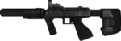

De: La Frikipedia, la enciclopedia extremadamente seria.
De: La Frikipedia, la enciclopedia extremadamente seria. De: La Frikipedia, la enciclopedia extremadamente seria.
| De la serie rarezas del mundo: | |||
| |||
| Cosa que representa | Correo electrónificado | ||
| Sirve para | Mandar y recibir spam | ||
| ¿Existe? | Interconectadamente si | ||
| Trastorno del cerebro | Solo en el cerebro | ||
| ¿Es comprensible? | No | ||
| Hábitat | Computadoras y calculadoras | ||
| Poder | Si | ||
| Tipo de rareza | Interneteana | ||
| ¿Natural o artificial? | Artificial | ||
| Nivel de frikismo | 100$ | ||
| ¿Es abundante? | Si | ||
«¿Un e-mail?»
~ Cartero muy bien actualizado.
El correo electrónico como generalmente se le dice en americalatinalandia y claro e-mail en gringolandia y Jarsenndurjen-hensons en Alemania-HOYGAN, es el plan para dominar el mundo (con bastante éxito hasta el momento) es también la herramienta y diversión que se utiliza en la actualidad para mandar lo que antes mandábamos en papel y lápiz véase: Carta y que duraba días en llegar a casa, con esta herramienta solo dura segundos y que a tenido demasiado éxito en el mundo basado en el pánico y la confusion de algunos que otros usuarios que lo utilizan.
Todavia no se sabe quién es fue o sera el creador y cerebro perverso detrás de este malévolo programa/herramienta/distracción que causa conmoción en todo el mundo por lo tanto investigadores del mundo han encontrado al que tal vez podría ser el sujeto que con unos hilos y madera controla todo el negocio el hombre fue llamado: Email Súarez y que en colaboración directa con Bill Gates y un Eewok muy fumaó dan rienda suelta a lo que hoy se llama Correo Electrónico (Email)
En la dirección de correo es donde todo comienza a tener sentido, ya que la dirección de correo es donde pueden llegar los susodichos correos (Emails) o mensajes electrónicos y es donde también puedes perder tú valioso tiempo mandando los correos electrónicos o cartas electrónicas, sin necesidad de matarte escribiéndola en papel higiénico y gracias al valioso conjunto de palabras que se hace al hacer una dirección web de correo es posible identificar la procedencia que tienen los correos.
Los correos pueden obtenerse por medio de páginas especiales en eso o se lo puedes pedir a un vagabundo, aunque es posible que con la segunda opción lo consigas más rápido.Los correos se caracterizan por tener Elnombreestupidoquepondras@algo.com que se leeria: IP anónima arroba algo punto com y el "@" es lo que se llama arroba o algarroba ya que es una "a" que nacio un poco chueca y por esa algarroba se reconocen los correos electrónico.
Proveedores de correos electrónicos son muchos y estos son los que pueden ser de paga para gente rica o gratuita para gente de bajos recursos que pueden pagar esto que se llama internet y estos proveedores son los que te pueden dar un nombre con contraseña propia y más duradero que un helado en el polo norte. Hay varios tipos de proveedores de correo electrónico que se pueden diferenciar sobre todo por la calidad del servicio claro, los de paga son más duraderos y mejores y además más rápidos que los de hotmail gratuitos.
Los correos electrónicos más usados son estos, los gratuitos que suelen tener un poco de publicidad y asi es como google gana dinero, esta publicidad va incrustada en cada mensaje asi como los juguetes que vienen en las cajas de Mc. Donald's pero un poco más sofisticados. Muchos de estos solo permiten ver los correos desde una página web igual que google con su correo electrónico para asgurarse de ver la publicidad con la que google a plagado la página y además otros tienen sus propios proogramas que se pueden descargar con tan solo unos pocos virus cualquira que apenas y te borran todos los archivos importantes de tú computadora y que puedas checar los mails sin necesidad de entrar a una página.
Los correos electrónicos de pago son los que tienen más servicios disponibles y además que salen mejor que los gratuitos y tienen 1% menos de spam y 99% más Pr0n ya que en estos es más difícil entrar, hackear o buscar pruebas despiadadas de asesinato. También se les puede llamar correos de pago a esos que haces con un dominio web ejemplo: Túnombre@tupáginaweb.terminaciondetudominio los cuales son más faciles manejar ya que es utilizada por una empresa en especial y lo usan más de 1 persona para bajar pr0n.
También esta el correo web que estas funcionan como páginas en donde puedes recibir y enviar gilipolleces llamadas emails y también recibir los mismos pero esto es un sitio web diseñado para ello. El correo web es comodo para mucha gente porque permite ver y almazenar los mensajes importantes que suelen ser 1 o 2 de cada 1.000 en vez de guardarlos en el disco duro del ordenardor lo malo que tiene es que es más lento que los servicios de correos normal y hay que leer los emails de uno en uno, en uno, etc.
Estan también estas que como son páginas web y tienden a ser mejores porque ofrecen más servicios que las páginas normales porque estas llegan a tener mini-bar o bar completo, para que te relajes mientras lees las estupideces y publicidades que te envian los otros usuarios, además que estas páginas no tienen correos basura... el 10% del tiempo.El funcionamiento de estas páginas de cliente de correo es muy diferente a un correo web ya que este baja todos los mensajes de golpe y se quedan almacenados en el ordenador siendo asi una muy mala idea de tener uno de estos clientes de correo. Una muestra de estos clientes de correos web son: Mozhila Thunderbird, Outlook espress y Eudora.

Para preparar el suculento platico del correo electrónico no solo hay que tener sazón si no tambien algunas cosas más... deja de lado el amor y comienza a reunir todo:
Para preparar... es decir, para escribirlo email o correo electrónico primero debes tomar el internet y combinarlo con la computadora, ya que esten bien combinados debes entrar a la página web que prefieras si quieres tu correo: @Jotmeil, @Yajú entre otras debes entrar a la página correspondiente o a la que se te haga más facil entrar y/o escribir. Recuerda no dejar mucho sin refrigerar el internet porqué se pone agrio y se corta o lo cortan, no esperar más de 30 días fuera el internet.
Escritura: Esto es lo más difícil si en tu caso eres analfabeta, solo es cuestion de mover las manos y aplastar botones hasta que se formen las palabras necesarias para que la persona a la que se lo mandas entienda si quiera alguna frase de lo que quieres decirle y despues poderle decir quien eres y cuando sepas que escribir y como te llamas pasas al siguente nivel que es:
Como escribir, estructuras y redactar el plátano mensaje:
Destinatario: Este es el sujeto o sujeta al que le envieras el mensaje.
Asunto: Es de lo que tratara el mensaje, si trata de "sexo con ropa" se pondria: Asunto: Sexo con ropa.
Mensaje en sí: En esta parte es donde te explayas hasta la muerte y con letra entendible y perfecta ortografía se escribira mejor y claro también se entenderá mejor.
Envió: De esto se encarga el ordenador/computadora así que puedes sentarte a tomarte un café mientras termina el proceso, claro primero consigue un café. Recepción: De eso se encarga nuevamente el ordenador y el receptor que suele ser el sujeto o sujeta que se la vive del otro lado del ordenador al que lo mandas claro, el receptor se dedica a leerlo y desecharlo como dios o tú lo trajiste al mundo... en este caso mundo internetero, el email se hospeda en una bandeja de entrada que es donde lo lees y ya que lo lees tienes de 6 opciones que son:
Si no entendistes la guía ni siquiera un poco, para enviar un email también puedes hacer esto:
Email Suárez, o Meilto para los amigos, nació en donde el diablo pierde la cordura (a causa del calor) una noche de Noviembre de 1827. Su padre Emilio Suárez y su madre Mail Barboza le dieron ese nombre juntando sus dos nombres (si que son pendejos listos, ¿a quien se lo ocurriría?). Tuvo una infancia humilde y jodida ya que su padre estaba desempleado y su madre mantenía a los hijos de sus hermanas.Meilto fue bastante precoz y terminó la universidad más rapido que Dugui Jauser. Desde muy joven empezó a desarrollar complicados planes de dominación mundial que no eran entendidos por nadie.
Email súarez barboza se dice que es el genio detrás del Email, pero alguien le robo la idea y años después la puso en marcha.
Se cree que Meilto está implicado en el plan de dominación mundial Email por la similitud de los nombres y por las demostraciones de dicho individuo de dominar al mundo, pero no está confirmado. Hay varios especialístas en el tema reenviando cadenas de amor estudiando los orígenes de tan terrible mal, pero pasan más tiempo intentando mantener su buzón de entrada limpio que buscando las raíces del plan.
Meses despues de que alguien pusiera en marcha el plan de Email Suárez Barboza vieron que tenian gran cantidad de personas interesadas en lo que proponian, de dejar de usar papel para escribirle a alguien y comenzar a usar un tecnológico teclado con todas las letras del abecedario, entonces esta empresa ladrona de ideas para "email's" se convirtio en lo que ahora se llama Hotamil.
Datos sobre hotmail
Hotmail o correo caliente como normalmente no se le conoce, es de las comunidades más grandes de correo y la que alberga a muchos usuarios para poder dominar el mundo algún día y el cual claro, esta aliado a Mésenller (aunque es lo mismo) y gracias a este se ha hecho famoso al rededor del mundo, pasando por francia e italia hasta llegar a los lugares más oscuros y tenebrosos como lo es irlanda.
En el mundo y con tanto exito y dólares de por medio ya hay tantos usuarios que tienen su correo en Mésenller o tambien llamado Hotmail tan solo con tener un "@hotmail.com" se pueden interconectar con el mundo y ayudar a que hotmail crezca más que google, Facebook y Hi5YouTube.
Por el momento hotmail se lleva a todos los usuarios y no deja gran parte a otras corporaciones de mensajeria como lo es: El cartero que va a tu casa a hecharte las cartas al buzón, entre otras y tanto éxito tiene que a cada rato se hacen cadenas para decir que hotmail cerrara entre otras cosas que ni siquiera le interesan a las personas anormales como lo somos todos.
Datos sobre Gmail
Gmail o también conocido: "JIMEIL° es el correo electrónico o mail de la corporación operadora interconectiva webal mejor conocida como Google o gugul que con este correo electrónico piensa dominar el mundo (igual que los demás), derrotar a hotmail, hacer que facebook ya no tenga tantos usuarios y que YouTube deje de subir 30 horas de videos cada minuto. Además de ser la peor idea de google (aparte de google earth) ya que no tiene tantos usuarios en este email gracias a la poderosa hotmail entre otros, aunque el correo gmail de google es muy cómodo porque recibes el 15% menos spam que hotmail y no tienes tantos "amigos" interconectados contigo gracias de nuevo a que todos están con hotmail.
Datos sobre Yahoo!
El yahoo (en HOYGAN: Yaju¡) es una de las redes anti-hotmeilistas más grandes de la red y junto a "Preguntas yahoo" piensan derrotar a hotmail y sacar a este mismo del mercado... y la red fue solo creada por conspiración pero gracias al gran éxito que no obtuvo, obtuvo éxito. Y gracias al éxito que obtuvo al no tener éxito conspira nuevamente contra hotmail y ahora es uno de los aliados a Gmail y otros correos electrónicos que no han tenido gran éxito. Actualmente yahoo manda correos diarios a sus queridos usuarios para que no los dejen y se vallan con hotmail y de recompensa tendran un 0.00001% de las acciones de yahoo y si los llegan a dejar los demandan por poco más de 3 dólares (o depende de en que pais estes)... nada ostentoso y suelen perder siempre.
El Email tiene cuatro partes: una en donde dice quién lo envía (el condenador), una en donde dice quién lo recibe (el o los condenados), una en donde dice de qué se trata (el resumen) y una en donde viene el mensaje (la condena).
De ahora en adelante nos referiremos a esas partes como el from, el to, el subyect y el mesej.
Es importante surayar que, al ser un proceso bastante lento de dominación (lleva como 30 años llevándose a cabo), muchos tos empezaron a darse cuenta de que algunos froms mandaban pura basura cadena de amor, salud, etc. Así que dejaron de leer los mesejs de acuerdo a lo que ponía el subyect. De ahí se desprende que los subyects ahora solo sean dos: Importantísimo y Buenísimo.
Los Emails se identifican también por categorías, sabores y colores.
| Los "te invito a esta página" | Los "cadeneros hasta la muerte" | Los correos amenazantes | Los sin asunto | Los "informativos más desinformativos" |
|---|---|---|---|---|
| Facebook - Actualizaciones | Léelo si te gusta el dinero | ¡Dame dinero hijo de puta! | (Sin asunto) | Aprende inglés |
| Hey amigo, Te invito a que veas mis fotos, videos y aplicaciones en facebook no es que te quiera llevar a facebook para que se te quede el vicio de entrar a cada rato como retrasado mental, pero esta tan divertido como un perro muerto vestido de payaso. Te espero Tu "Amigo" proveniente de Faacebook |
Hola Es posible que abriste este email porque te gusta el dinero y puedes tener mucho, solo manda este mensaje a 300.000 de tus amigos agregados aunque no esnten conectados mandalo, veras que mañana te aparecen 3 maletas de color nego que contienen 1.000.000 de pesos cada una, pero por el contrario si no lo mandas morira toda tu familia comida por un tiburón gay. Tu decides ¡Que tengas un bonito dia!. |
 ¿Que tal amigo! Bueno esto es sin rodeos, son un reo que esta en la penitenciaria estatal de <Pon tu ciudad aqui para encontrarte por favor> y necesito dinero y aunque no lo creas tengo a tus padres secuestrados y necesito 10.000 pesos para poder salir de la cárcel, si no me los entregas ahora, te enviare un dedo y luego una oreja de cada uno para que veas que es cierto. ¡Saludos amigo ^^! |
¿Quien eres? (Sin asunto) |
 Hey, ¿sabias que en el país en el que vives el 30% de personas hablan inglés? ¿Y tú quisieras ser parte de ellos?. Pues ahora puedes solo con los 425 sencillisimos tomos que te ofrecemos, es muy fácil solo llamanos o mandanos un email y con gusto te lo mandamos hasta tu hogar. Además de sencillo es barato solo 10 dólares cada tomo. ¡Llama ya! y aprende el inglés. Aprende inglés GRATIS |
La estrategia es muy sencilla. Un usuario malévolo (y probablemente dominado mentalmente por el wombat) manda un Email a una serie de pendejos inocentes que creen al pie de la letra lo que el Email les dice. Los temas favoritos son:
El pendejo inocente que lo recibe lee el mensaje (el mensaje oculto se queda guardado en una parte de su cerebro), lo cree y lo reenvía a otra bola de inocentes que repetirán el proceso.
El Email siempre trae una amenaza. Algunas de las amenazas favoritas utilizadas en el Email son:
Los Email también ofrecen cosas maravillosas: premios, deseos, colección de íntimos amigos sinceros, y otra sarta de cosas que la gente quiere y desea con todas sus fuerzas hasta ,(probablemente), cagarse..
| | ||||||||||||
|---|---|---|---|---|---|---|---|---|---|---|---|---|
Personajes
Programación
Dispositivos de Almacenamiento
Expresiones Interneteras
Software
Empresas
Para tu carrera
|
Autor(es):